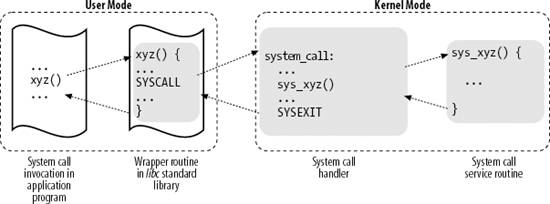

{% include JB/setup %}
{% raw %}
<div>


<a name="understandlk-CHP-10-SECT-2"></a>
<h3 class="docSection1Title">10.2. System Call Handler and Service Routines</h3><a name="IDX-CHP-10-2499"></a>
<a name="IDX-CHP-10-2500"></a>
<a name="IDX-CHP-10-2501"></a>
<a name="IDX-CHP-10-2502"></a>
<a name="IDX-CHP-10-2503"></a>
<a name="IDX-CHP-10-2504"></a>
<a name="IDX-CHP-10-2505"></a>
<a name="IDX-CHP-10-2506"></a>
<p class="docText1">When a User Mode process invokes a system call, the CPU switches to Kernel Mode and starts the execution of a kernel function. As we will see in the next section, in the 80 x 86 architecture a Linux system call can be invoked in two different ways. The net result of both methods, however, is a jump to an assembly language function called the <span class="docEmphasis">system call handler</span>.</p>
<p class="docText1">Because the kernel implements many different system calls, the User Mode process must pass a parameter called the <span class="docEmphasis">system call number</span> to identify the required system call; the <tt class="calibre25">eax</tt> register is used by Linux for this purpose. As we'll see in the section "<a class="pcalibre5 docLink pcalibre1" href="understandlk-CHP-10-SECT-4.html#understandlk-CHP-10-SECT-4">Parameter Passing</a>" later in this chapter, additional parameters are usually passed when invoking a system call.</p>
<p class="docText1">All system calls return an integer value. The conventions for these return values are different from those for wrapper routines. In the kernel, positive or 0 values denote a successful termination of the system call, while negative values denote an error condition. In the latter case, the value is the negation of the error code that must be returned to the application program in the <tt class="calibre25">errno</tt> variable. The <tt class="calibre25">errno</tt> variable is not set or used by the kernel. Instead, the wrapper routines handle the task of setting this variable after a return from a system call.</p>
<p class="docText1">The system call handler, which has a structure similar to that of the other exception handlers, performs the following operations:</p>
<ul class="calibre11"><li class="calibre12"><p class="docText1">Saves the contents of most registers in the Kernel Mode stack (this operation is common to all system calls and is coded in assembly language).</p></li><li class="calibre12"><p class="docText1">Handles the system call by invoking a corresponding C function called the <span class="docEmphasis">system call service routine</span>.</p></li><li class="calibre12"><p class="docText1">Exits from the handler: the registers are loaded with the values saved in the Kernel Mode stack, and the CPU is switched back from Kernel Mode to User Mode (this operation is common to all system calls and is coded in assembly language).</p></li></ul>
<p class="docText1">The name of the service routine associated with the <tt class="calibre25"><i class="docEmphasis">xyz</i></tt><tt class="calibre25">( )</tt> system call is usually <tt class="calibre25">sys_</tt><tt class="calibre25"><i class="docEmphasis">xyz</i></tt><tt class="calibre25">( )</tt>; there are, however, a few exceptions to this rule.</p>
<p class="docText1"><a class="pcalibre5 docLink pcalibre1" href="#understandlk-CHP-10-FIG-1">Figure 10-1</a> illustrates the relationships between the application program that invokes a system call, the corresponding wrapper routine, the system call handler, and the system call service routine. The arrows denote the execution flow between the functions. The terms "<tt class="calibre25">SYSCALL</tt>" and "<tt class="calibre25">SYSEXIT</tt>" are placeholders for the actual assembly language instructions that switch the CPU, respectively, from User Mode to Kernel Mode and from Kernel Mode to User Mode.</p>
<a name="understandlk-CHP-10-FIG-1"></a><p class="calibre14"><center class="calibre8">
<h5 class="docFigureTitle">Figure 10-1. Invoking a system call</h5>
</center></p><br class="calibre7"/>
<p class="docText1">To associate each system call number with its corresponding service routine, the kernel uses a <span class="docEmphasis">system call dispatch table</span>, which is stored in the <tt class="calibre25">sys_call_table</tt> array and has <tt class="calibre25">NR_syscalls</tt> entries (289 in the Linux 2.6.11 kernel). The <span class="docEmphasis">n</span><sup class="calibre37">th</sup> entry contains the service routine address of the system call having number <span class="docEmphasis">n</span>.</p>
<p class="docText1">The <tt class="calibre25">NR_syscalls</tt> macro is just a static limit on the maximum number of implementable system calls; it does not indicate the number of system calls actually implemented. Indeed, each entry of the dispatch table may contain the address of the <tt class="calibre25">sys_ni_syscall( )</tt> function, which is the service routine of the "nonimplemented" system calls; it just returns the error code <tt class="calibre25">-ENOSYS</tt>.</p>

<br class="calibre7"/>

</div>

{% endraw %}

